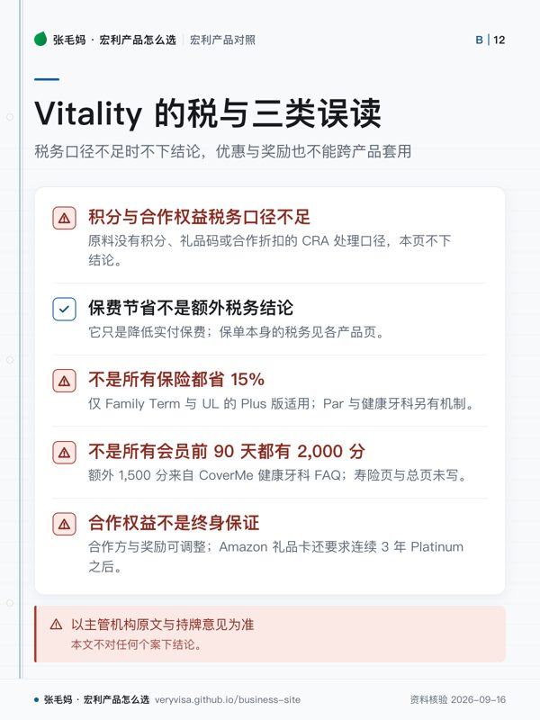

- 是什么不是保险，是挂在部分寿险与健康牙科险上的健康互动计划
- 两档Go 随合资格保单免费；Plus 要付月费，才有更多奖励与降低保费的机会
- 省多少要看产品线定期险与 UL 最高 15%；Par 是 Vitality Dividend 的可能；健康牙科线首年 5%、之后最高 10%
- 边界官方表示 Vitality 活动数据不会被用来改变承保条件；奖励与合作方可随时调整
知识卡
不看正文也能拿到这一页的核心规则：先看导读，再看图。点图放大，左右翻页。
- 先看先确认保单类别，再决定该看哪套机制。
- 易漏同一品牌名称下，不同险种的收费与优惠并不统一。
- 下一步报价时只引用对应险种页面，不把另一条业务线的规则搬过来。

- 先看先把未知的税务问题和错误宣传口径分开处理。
- 易漏同一品牌下，各险种页面写出的数字不能自动互通。
- 下一步对客说明时，只引用对应险种页面及仍然有效的权益条件。
Vitality 常被说成「买保险送手表、还省 15%」。真实结构是：Go 随合资格保单免费，Plus 要付月费； 定期险与万能寿险线是「最高 15% 折扣」，分红终身寿险线是「Vitality Dividend 的可能」， 健康牙科线是「首年 5%、之后最高 10%」。三套机制分开列，别混着讲。
它挂在哪些产品上：定期寿险、Manulife Par、 万能寿险、个人健康牙科险。
一句话
Vitality 不是一张保险，是挂在部分寿险和健康牙科险上的健康互动计划：做健康活动攒积分换权益，部分产品还能影响保费——但每条产品线的机制不一样，不能一句「省 15%」讲到底。
事实清单
- Manulife Vitality 随合资格保险提供（官方原话 included with your insurance），不是单独购买的保险；会员通过日常健康行为攒积分。✅源
- 官方表示会员自行决定分享哪些数据，Vitality 活动数据不会被用来改变保险风险评估或承保条件。✅源
- Manulife Vitality 于 2016-09-27 在加拿大上线，2026 年是第十年。🟡报
- Vitality Go 随合资格保单免费提供；升级 Vitality Plus 要付月费，才有更多奖励、健康工具和降低保费的机会；积分越多 Vitality Status 越高，解锁的权益越多。✅源
- Plus 月费没有统一数字（官方 FAQ 只写 small monthly fee），按产品算：UL with Vitality Plus 为 $6／月或 $72／年保证费用（顾问页）；Par with Vitality Plus 按缴费期为 $15／$10／$6／$4 每月。✅源
- Family Term with Vitality Plus 与 UL with Vitality Plus：年度保费或保险成本折扣最高 15%，与同一保单不加 Plus 相比，幅度看被保人达到的 Vitality Status。✅源
- Par with Vitality Plus：不是保费折扣，而是 Vitality Dividend 的可能；缴至 100 岁不提供 Vitality Dividend。✅源
- Flexcare／FollowMe Health & Dental with Vitality：首年保费省 5%，之后年度最高省 10%（产品页），Vitality 月费 $5。✅源
- CoverMe 健康牙科线的 Vitality FAQ 写明四级 Status 门槛：Bronze 0、Silver 3,500、Gold 7,000、Platinum 10,000 分，对应下一年保费节省 0%／2%／5%／10%；同页注明奖励资格与供应不保证、可能变化。✅源
- 同一 FAQ：完成 Vitality Health Review（约 15 分钟在线问卷）每年可得 500 分；寿险产品页与 Vitality 总页没有写这个分值。✅源
- 同一 FAQ 另有：注册后 90 天内完成 Health Review 首年另加 1,500 分；Status 保持到本计划年末再延续一整个计划年，当年积分 10% 结转下一年，首个计划年只有 9 个月。这是健康牙科线页面的口径，寿险页没写，不能直接套到寿险。✅源
- Vitality Plus 的合作权益包括 Apple Watch（最低 $0）、Garmin、Oura Ring、WHOOP、GoodLife Fitness、Expedia、Amazon.ca $99 礼品卡（奖励页脚注：连续 3 年 Platinum 之后）、面向 50 岁以上合资格会员的 Galleri 多癌种早筛优惠价等，Go 只有其中一部分；合作方与奖励可随时调整，不保证保单存续期内一直提供。✅源
- 官方披露（统计截至 2026 年 3 月，仅限初始指标不在健康范围、且首个与最近一个计划年都完成体检的会员）：BMI 回到健康范围 37%、血压 46%、胆固醇 53%、血糖 23%；不代表全体会员，不能用于承诺个人结果。✅源
- 十周年抽奖：报名 2026-09-10 至 2026-10-11（东部时间），面向已注册 Vitality Go 或 Plus、已成年的加拿大居民 Manulife 保单持有人，无需购买。✅源
- 十周年抽奖：2026-09-14 至 2026-10-11 每周达成 Weekly Target 得 1 次额外机会，最多额外 4 次，每人最多 5 次；共 10 份奖品，大奖 $10,000 Expedia OneKeyCash，2026-10-23 开奖，中奖者须答对数学技能测试题。✅源
与同类产品比较
口径：原料没有其他保险公司健康激励计划的官方数字；本表比 Vitality 在 Manulife 各产品线上的不同机制，这是最容易讲错的地方。
| 机构／产品 | Vitality 版本与费用 | 对保险成本的影响 | 注意 |
|---|---|---|---|
| Manulife Family Term（基础版） | 注册保单即免费享部分权益 ✅源 | 无 ✅源 | 只有合作奖励与折扣 ✅源 |
| Manulife Family Term with Vitality Plus | Plus ✅源 | 保费折扣最高 15% ✅源 | 看被保人达到的 Status，非固定 ✅源 |
| Manulife UL with Vitality Plus | Plus，$6／月或 $72／年 ✅源 | 保险成本折扣最高 15% ✅源 | 与同一保单不加 Plus 相比，幅度看 Status ✅源 |
| Manulife Par with Vitality Plus | $15／$10／$6／$4 每月 ✅源 | Vitality Dividend 的可能 ✅源 | 缴至 100 岁没有 ✅源 |
| Manulife Flexcare／FollowMe with Vitality | $5 每月 ✅源 | 首年 5%、之后最高 10% ✅源 | 积分与 Status 规则见 CoverMe 健康牙科线 FAQ ✅源 |
税务后果
- 无（原料没有关于 Vitality 积分、礼品码或合作折扣税务处理的 CRA 口径，本页不下结论；保费节省只是降低你付的保费，保单本身的税务见各产品页）。
- 以主管机构原文与持牌意见为准，本文不对任何个案下结论。
常见误区
- 「参加 Vitality 所有保险都省 15%」——15% 只针对 Family Term 与 UL 的 Plus 版；Par 走 Vitality Dividend，健康牙科首年 5%、之后最高 10%。✅源
- 「所有会员前 90 天都能拿 2,000 分」——90 天内另加 1,500 分出自 CoverMe 健康牙科线的 FAQ，寿险产品页与 Vitality 总页都没写，别对寿险客户这样讲。✅源
- 「Apple Watch、Amazon、Expedia 权益终身都有」——合作方与奖励可以调整，官方不保证长期提供；奖励页脚注还写明 Amazon 礼品卡在连续 3 年 Platinum 之后才有。✅源
- 「参加 Vitality 的人一半血压都变好了」——数字只统计初始不健康的那部分会员，不代表所有人，也不承诺个人结果。✅源
- 「现在买 Manulife 保险就能参加 $10,000 抽奖」——抽奖只面向已注册 Vitality 的保单持有人，报名 2026-10-11 截止；所有活动素材此后要下架或重核。✅源
- 「分享运动数据会让保险公司加价或拒保」——官方表示活动数据不用于改变风险评估或承保。✅源
- 「Vitality 只适合年轻、天天健身的人」——官方写明计划会随年龄调整积分获取方式，但不能引申为「适合所有老人」。✅源
事实来源
该问经纪的问题（抄下来直接问）
- 我考虑的这张保单，Vitality 到底影响保费、保险成本、分红，还是只有权益？我按实际运动习惯大概能到哪个 Status？
- 付 Plus 的月费后，按我能达到的 Status，一年算下来是净省还是净花？
- 我已经有合资格保单但还没注册 Vitality：怎么激活、连设备，赶在 2026-10-11 前参加十周年活动？
- 这一页的数字核对日期是哪天？到我签字那天，哪几个会变？
- 同样的需求，除了这个产品还有哪些选择，为什么你不建议那几个？
去论坛讨论
音视频与笔记本
- nb-manulife-insurance
本页是公开资料的整理与对照，不是官方文件，也不构成针对你个人情况的保险、投资或税务建议。产品条款、利率与费用以机构当期官方文件为准；税务处理以主管机构原文与持牌专业意见为准。数字会变，看到本页请对一眼「核对日期」。